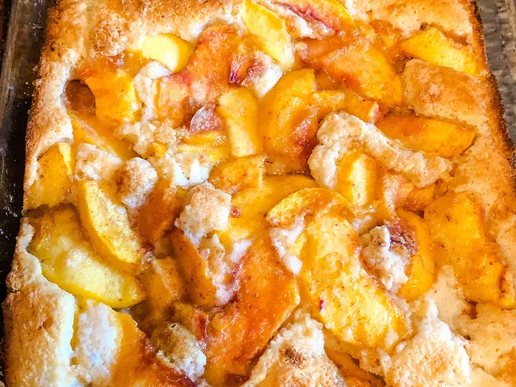

Peach Cobbler

An amazing peach cobbler
An old fashion recipe from a collection of my mother's favorites. With a dash of nutmeg the aroma will take you back to grandma's kitchen.
Ingredients
- ½ cup butter, melted
- 2 large peaches, peeled and sliced
- 1 ½ cups white sugar, divided
- 1 cup all-purpose flour
- 2 teaspoons baking powder
- ¼ teaspoon salt
- 1 pinch ground nutmeg
- ¾ cup milk
Directions
- Preheat oven to 375 degrees F (190 degrees C). Pour butter into an 8-inch square baking dish.
- Combine peaches and 3/4 cup sugar together in a bowl. Whisk flour, remaining sugar, baking powder, salt, and nutmeg together in a bowl; stir in milk just until batter is combined. Pour batter over butter and top with peaches.
- Bake in the preheated oven until cobbler is golden brown, 45 to 50 minutes.